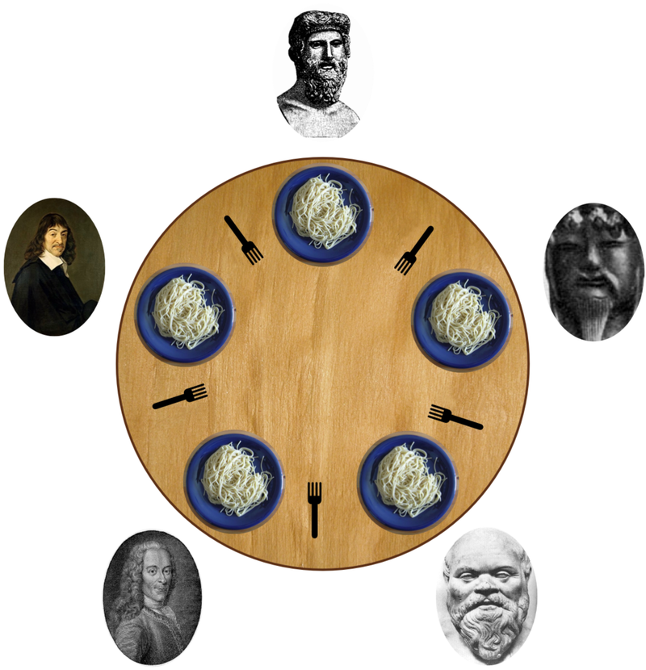

| Category | Difficulty | Likes | Dislikes |
|---|---|---|---|
| Concurrency | Medium | 397 | 363 |
Five silent philosophers sit at a round table with bowls of spaghetti. Forks are placed between each pair of adjacent philosophers.
Each philosopher must alternately think and eat. However, a philosopher can only eat spaghetti when they have both left and right forks. Each fork can be held by only one philosopher and so a philosopher can use the fork only if it is not being used by another philosopher. After an individual philosopher finishes eating, they need to put down both forks so that the forks become available to others. A philosopher can take the fork on their right or the one on their left as they become available, but cannot start eating before getting both forks.
Eating is not limited by the remaining amounts of spaghetti or stomach space; an infinite supply and an infinite demand are assumed.
Design a discipline of behaviour (a concurrent algorithm) such that no philosopher will starve; i.e., each can forever continue to alternate between eating and thinking, assuming that no philosopher can know when others may want to eat or think.

The problem statement and the image above are taken from wikipedia.org
The philosophers' ids are numbered from 0 to 4 in a clockwise order. Implement the function void wantsToEat(philosopher, pickLeftFork, pickRightFork, eat, putLeftFork, putRightFork) where:
philosopher is the id of the philosopher who wants to eat.pickLeftFork and pickRightFork are functions you can call to pick the corresponding forks of that philosopher.eat is a function you can call to let the philosopher eat once he has picked both forks.putLeftFork and putRightFork are functions you can call to put down the corresponding forks of that philosopher.Five threads, each representing a philosopher, will simultaneously use one object of your class to simulate the process. The function may be called for the same philosopher more than once, even before the last call ends.
Example 1:
Input: n = 1
Output: [[3,2,1],[3,1,1],[3,0,3],[3,1,2],[3,2,2],[4,2,1],[4,1,1],[2,2,1],[2,1,1],[1,2,1],[2,0,3],[2,1,2],[2,2,2],[4,0,3],[4,1,2],[4,2,2],[1,1,1],[1,0,3],[1,1,2],[1,2,2],[0,1,1],[0,2,1],[0,0,3],[0,1,2],[0,2,2]]
Explanation:
n is the number of times each philosopher will call the function.
The output array describes the calls you made to the functions controlling the forks and the eat function, its format is:
output[i] = [a, b, c] (three integers)
- a is the id of a philosopher.
- b specifies the fork: {1 : left, 2 : right}.
- c specifies the operation: {1 : pick, 2 : put, 3 : eat}.
Constraints:
1 <= n <= 60